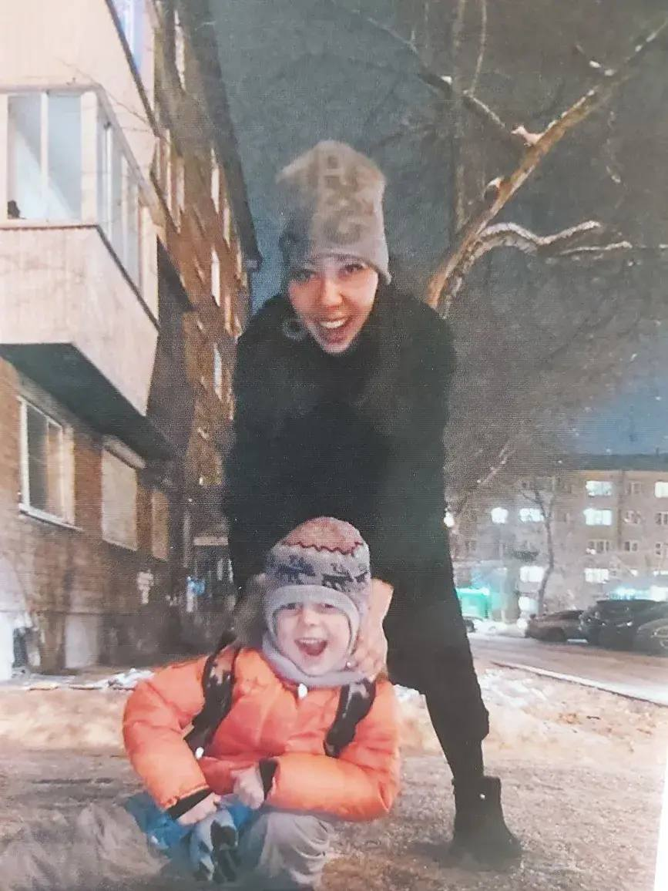
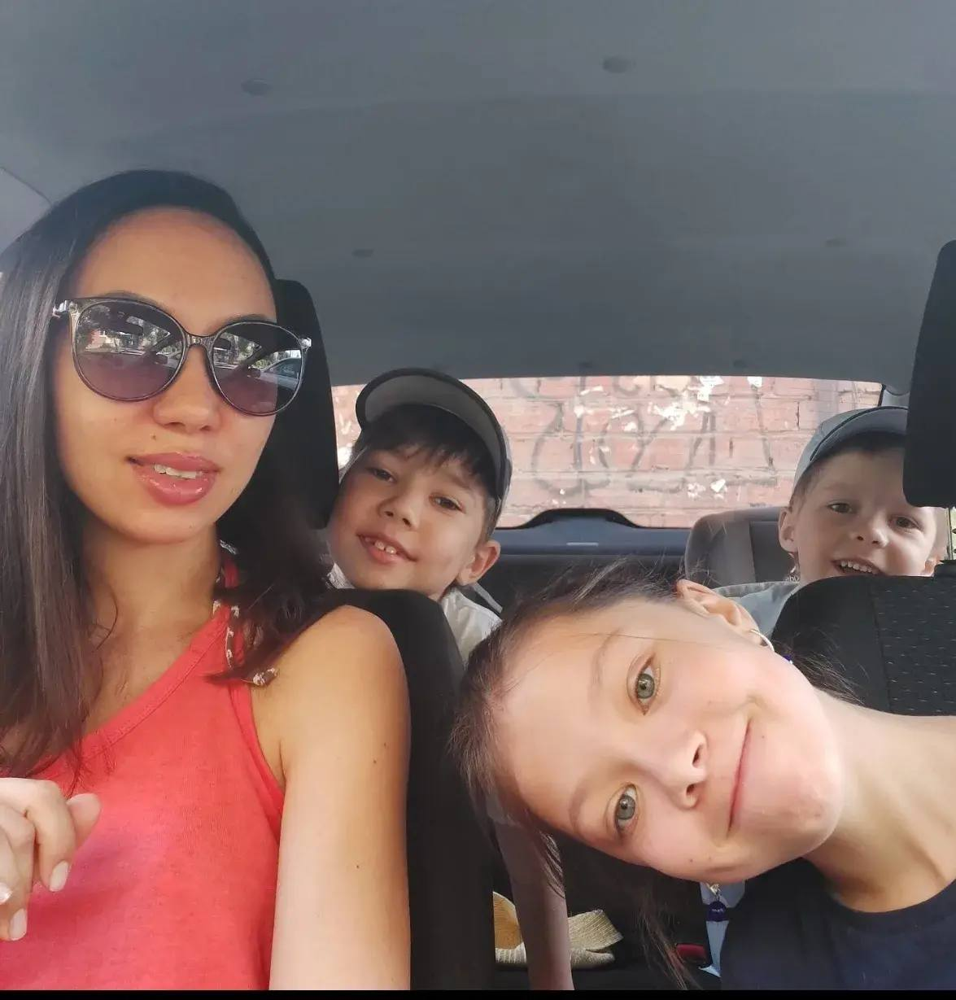

Двое в мире, где сосиски в тесте встречаются с врачебной мудростью, а любовь лечит лучше всяких лекарств.
Наша история✨ Главный мечтатель семьи ✨
Герман точно знает, что счастье измеряется не в цифрах, но если уж считать – то только съедобными радостями.
Суперспособность:
🩺 Любит медицину и лечит людей. Особое призвание — сложные случаи диагностики и лечения заболеваний.
А ещё наша мама любит меня, Германа, моего старшего брата и всю семью. Она создаёт счастливый, дружный дом, где тепло и уютно каждому.

